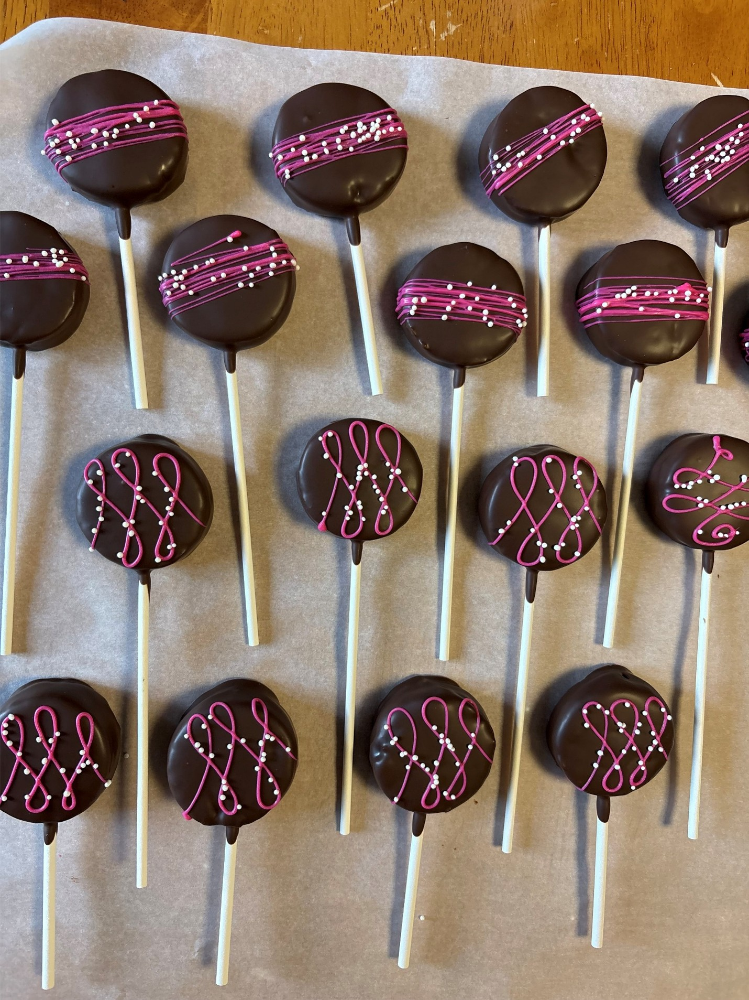

About Us
We are a confectionary and sweets startup based in Papillion, Nebraska. Our treats are inspired by and use the recipes of Earl Taylor, beloved grandfather, father, brother, and friend. He was the friendliest, most joyful person you’d meet, and we want to continue to share the love he spread with his amazing treats and recipes.
We, Tyler and Kamee Hale, run this business with our family. We have mastered the recipes we have implemented to a T, and plan on adding a lot more! We are excited to try the treats and flavors requested of us.
Right now, we are based out of our home in Papillion, with a cake pop cart just outside on our street. We are going to show up to many events in our area, including the Papillion Farmers Market, Free Music Fridays at Shadow Lake Mall, and craft fairs nearby us. We have made our famous caramels as Christmas presents and as extra money points for over 10 years, and recently have decided to move beyond that and make this a business Earl would be proud of.
